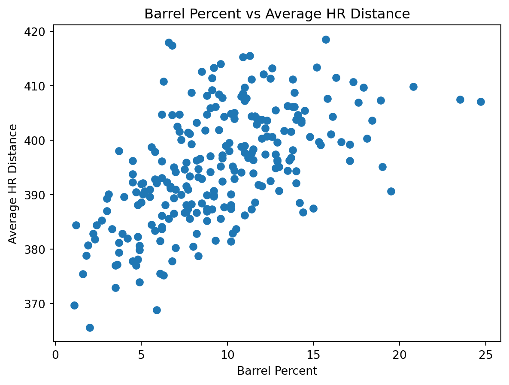
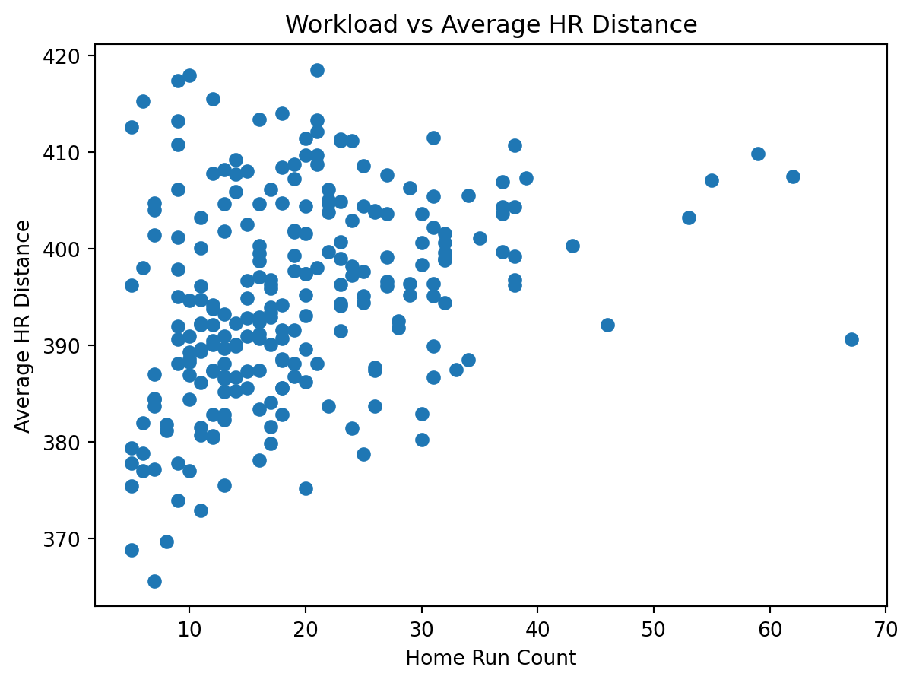

from stat386_project.analysis import load_combined, prepare_data
df_raw = load_combined("data/combined_leaders_2025.csv")
df = prepare_data(df_raw, min_hr=5)
df_raw.shape, df.shape((240, 9), (240, 9))This tutorial demonstrates how to use the jerm2000-stat-386-project Python package to reproduce the analysis of MLB home run distance, exit velocity, and barrel metrics.
The tutorial assumes:
Install the package from PyPI:
pip install jerm2000-stat-386-projectThe analysis uses a combined hitter-level dataset saved as:
data/combined_leaders_2025.csvTo generate the dataset using the installed package, run the following command in your terminal:
python -m stat386_project.fetch_dataThis will:
query Statcast using pybaseball
filter to home runs
compute hitter-level summary statistics
merge in barrel metrics (downloaded automatically if not available locally)
create:
data/hr_distance_leaders_2025.csvdata/combined_leaders_2025.csvNote: This step requires an internet connection and may take a minute to run.
from stat386_project.analysis import load_combined, prepare_data
df_raw = load_combined("data/combined_leaders_2025.csv")
df = prepare_data(df_raw, min_hr=5)
df_raw.shape, df.shape((240, 9), (240, 9))What this does
load_combined() reads data/combined_leaders_2025.csv
prepare_data() applies filtering rules used in the project:
from stat386_project.analysis import longest_vs_avg_distance
longest_vs_avg_distance(df, n=10)| player_name | hr_count | avg_hr_distance | max_hr_distance | avg_launch_speed | max_launch_speed | |
|---|---|---|---|---|---|---|
| 60 | Kurtz, Nick | 37 | 403.6 | 493 | 105.7 | 114.6 |
| 30 | Trout, Mike | 27 | 407.6 | 485 | 107.1 | 115.4 |
| 35 | Buxton, Byron | 37 | 406.9 | 479 | 106.4 | 113.7 |
| 42 | Carroll, Corbin | 31 | 405.4 | 474 | 105.6 | 111.8 |
| 85 | Greene, Riley | 38 | 399.2 | 471 | 107.6 | 114.3 |
| 68 | O'Hoppe, Logan | 19 | 401.7 | 470 | 104.9 | 109.6 |
| 34 | Judge, Aaron | 55 | 407.1 | 469 | 108.0 | 117.9 |
| 31 | Ohtani, Shohei | 62 | 407.5 | 469 | 109.5 | 120.0 |
| 0 | Acuña Jr., Ronald | 21 | 418.5 | 468 | 109.2 | 115.5 |
| 18 | Schwarber, Kyle | 59 | 409.8 | 468 | 107.8 | 117.2 |
How to interpret - Players are ranked by max_hr_distance - avg_hr_distance shows whether their typical home run distance is also high - exit velocity columns provide context for how consistently hard the player hits the ball
from stat386_project.analysis import barrel_power_table
barrel_power_table(df, n=10)| player_name | hr_count | avg_hr_distance | max_hr_distance | avg_launch_speed | barrels | brl_percent | |
|---|---|---|---|---|---|---|---|
| 34 | Judge, Aaron | 55 | 407.1 | 469 | 108.0 | 96 | 24.7 |
| 31 | Ohtani, Shohei | 62 | 407.5 | 469 | 109.5 | 100 | 23.5 |
| 18 | Schwarber, Kyle | 59 | 409.8 | 468 | 107.8 | 85 | 20.8 |
| 155 | Raleigh, Cal | 67 | 390.6 | 448 | 105.6 | 80 | 19.5 |
| 118 | Stowers, Kyle | 25 | 395.1 | 440 | 104.6 | 53 | 19.0 |
| 32 | Alonso, Pete | 39 | 407.3 | 447 | 107.6 | 89 | 18.9 |
| 60 | Kurtz, Nick | 37 | 403.6 | 493 | 105.7 | 50 | 18.4 |
| 78 | Soto, Juan | 43 | 400.3 | 437 | 106.9 | 81 | 18.1 |
| 19 | Cruz, Oneil | 20 | 409.7 | 463 | 110.2 | 54 | 17.9 |
| 35 | Buxton, Byron | 37 | 406.9 | 479 | 106.4 | 61 | 17.6 |
How to interpret - brl_percent (barrel percentage) is a measure of high-quality contact - the other columns provide context about distance and exit velocity
from stat386_project.analysis import workload_vs_distance
workload_vs_distance(df).sort_values("hr_count", ascending=False).head(10)| player_name | hr_count | avg_hr_distance | |
|---|---|---|---|
| 155 | Raleigh, Cal | 67 | 390.6 |
| 31 | Ohtani, Shohei | 62 | 407.5 |
| 18 | Schwarber, Kyle | 59 | 409.8 |
| 34 | Judge, Aaron | 55 | 407.1 |
| 61 | Suárez, Eugenio | 53 | 403.2 |
| 143 | Caminero, Junior | 46 | 392.1 |
| 78 | Soto, Juan | 43 | 400.3 |
| 32 | Alonso, Pete | 39 | 407.3 |
| 85 | Greene, Riley | 38 | 399.2 |
| 17 | Adell, Jo | 38 | 410.7 |
How to interpret - shows whether hitters with many home runs also tend to hit longer home runs on average
from stat386_project.analysis import correlation_table
correlation_table(df).round(3)| avg_hr_distance | max_hr_distance | avg_launch_speed | max_launch_speed | barrels | brl_percent | hr_count | |
|---|---|---|---|---|---|---|---|
| avg_hr_distance | 1.000 | 0.695 | 0.803 | 0.607 | 0.502 | 0.572 | 0.318 |
| max_hr_distance | 0.695 | 1.000 | 0.690 | 0.697 | 0.648 | 0.703 | 0.582 |
| avg_launch_speed | 0.803 | 0.690 | 1.000 | 0.852 | 0.673 | 0.760 | 0.472 |
| max_launch_speed | 0.607 | 0.697 | 0.852 | 1.000 | 0.726 | 0.782 | 0.597 |
| barrels | 0.502 | 0.648 | 0.673 | 0.726 | 1.000 | 0.889 | 0.889 |
| brl_percent | 0.572 | 0.703 | 0.760 | 0.782 | 0.889 | 1.000 | 0.772 |
| hr_count | 0.318 | 0.582 | 0.472 | 0.597 | 0.889 | 0.772 | 1.000 |
How to interpret - larger positive values indicate metrics that tend to be high for the same hitters - smaller values indicate metrics that capture different aspects of power/performance
from stat386_project.analysis import find_outliers
outliers = find_outliers(
df,
columns=("avg_hr_distance", "max_hr_distance", "avg_launch_speed"),
z_thresh=2.5,
)
outliers[[
"player_name",
"hr_count",
"avg_hr_distance", "avg_hr_distance_z",
"max_hr_distance", "max_hr_distance_z",
"avg_launch_speed", "avg_launch_speed_z",
]].head(25)| player_name | hr_count | avg_hr_distance | avg_hr_distance_z | max_hr_distance | max_hr_distance_z | avg_launch_speed | avg_launch_speed_z | |
|---|---|---|---|---|---|---|---|---|
| 19 | Cruz, Oneil | 20 | 409.7 | 1.406094 | 463 | 1.575329 | 110.2 | 2.726605 |
| 30 | Trout, Mike | 27 | 407.6 | 1.204904 | 485 | 2.771782 | 107.1 | 1.315900 |
| 60 | Kurtz, Nick | 37 | 403.6 | 0.821685 | 493 | 3.206855 | 105.7 | 0.678807 |
| 232 | McKinstry, Zach | 13 | 375.5 | -1.870428 | 386 | -2.612255 | 101.1 | -1.414497 |
| 237 | Arraez, Luis | 8 | 369.7 | -2.426095 | 402 | -1.742107 | 98.0 | -2.825202 |
| 238 | Caballero, José | 5 | 368.8 | -2.512319 | 423 | -0.600039 | 101.8 | -1.095951 |
| 239 | Frazier, Adam | 7 | 365.6 | -2.818895 | 393 | -2.231565 | 97.7 | -2.961722 |
Why this matters - This project is partly about whether “headline” max metrics reflect consistent skill - outliers provide concrete examples to discuss in the report (not data errors)
The plotting functions return Matplotlib Figure objects. In a notebook or Quarto, they will display automatically when they are the last line. In a plain Python script, you should call plt.show() after creating the figure.
from stat386_project.analysis import plot_max_vs_avg_distance
import matplotlib.pyplot as plt
fig = plot_max_vs_avg_distance(df)
plt.show()
from stat386_project.analysis import plot_launch_speed_vs_distance
import matplotlib.pyplot as plt
fig = plot_launch_speed_vs_distance(df)
plt.show()
from stat386_project.analysis import plot_barrel_percent_vs_distance
import matplotlib.pyplot as plt
fig = plot_barrel_percent_vs_distance(df)
plt.show()
from stat386_project.analysis import plot_hr_count_vs_distance
import matplotlib.pyplot as plt
fig = plot_hr_count_vs_distance(df)
plt.show()
Using the PyPI package, the workflow is:
pip install jerm2000-stat-386-project)python -m stat386_project.fetch_data)load_combined() → prepare_data())For detailed function reference (inputs/outputs), see the Documentation page.